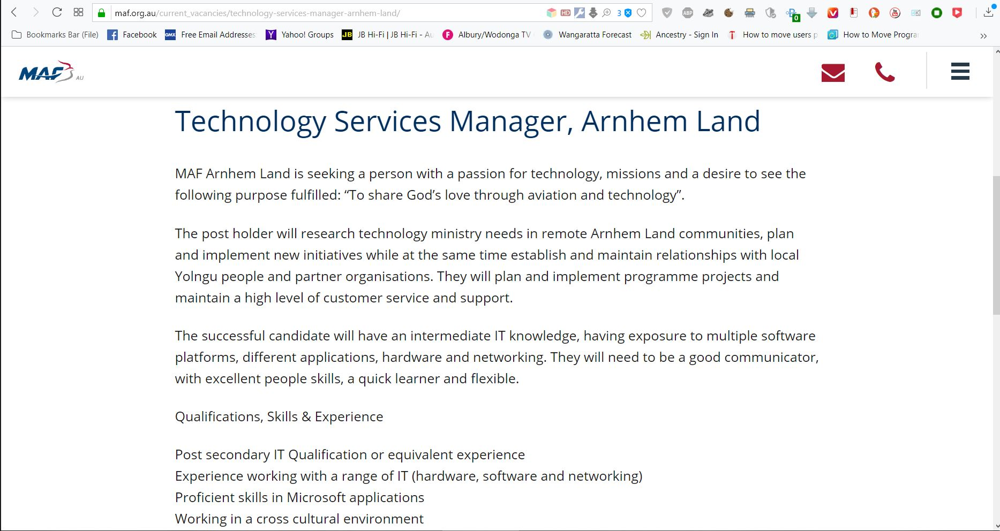
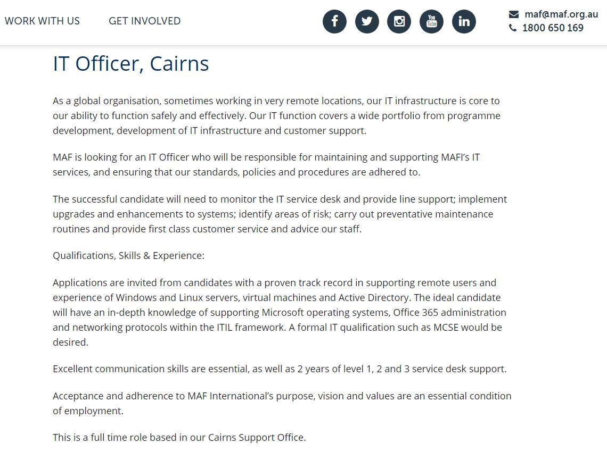
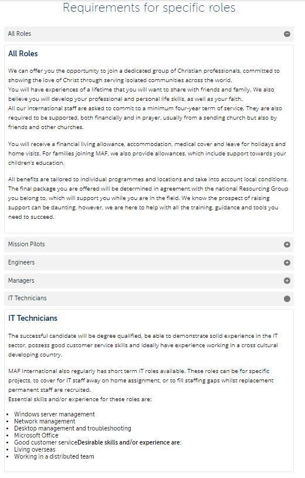
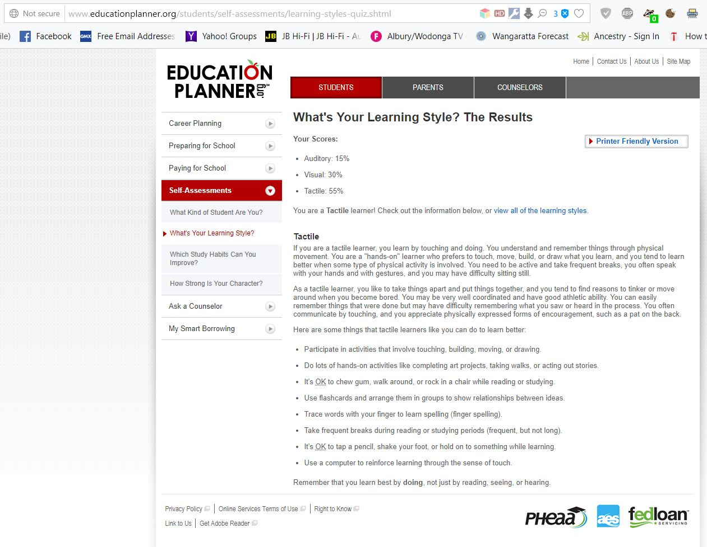
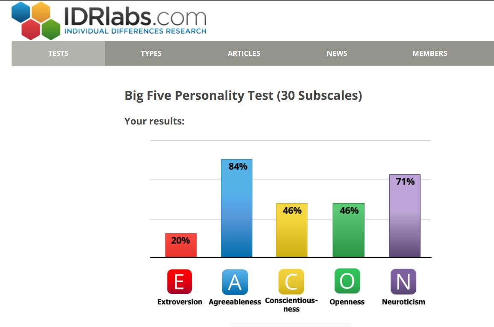

My Profile – Steve Davies Weblink
=======My Profile – Steve Davies Weblink
>>>>>>> Assignment1RMIT Introduction to IT – Assignment Task 1
Student Number S0147492 – eMail: s0147492@student.rmit.edu.au
Personal Background:
I'm Steve Davies, 55Years Old, Live in Wangaratta, Rural Victoria, Originally from Outer Northern Suburbs, Melbourne Returning to Study, via OUA – 4th-5th Generation Australia, mostly UK Origins – Australian English Language skills – Started Journey with IT on Tandy TRS80 & Amiga500. Lots of experience from Summer School – PDP11, Early RMIT computers – LaTrobe Uni VAX, Work Experience 1981 – ICI changing Tape reels! Feeding punch Cards and changing 5MB HDD Spindles! Started Upgrading computers from A286 and some second-hand original IBM PC 8088 – Installation and troubleshooting – CP/M – Good Old Windows3, IBM Dos3, MSDos3.3 MSDos4, DR-Dos5, OS/2, Windows3.1, Windows95 and the list goes on. Solaris, Redhat, Linux Mint is my favourite! Upgraded all my own + tinkered – Some years in Local Computer shops from 486 – Pentium 4, including Assembly, Troubleshooting, OS & Business Application Installation and customising. – Later IT & Network Consultant – IT Networking & Education Support Technician. Career pause due to Carer Roles. Require Up-skilling and Qualifying for Future SB Multi-Platform Server, Workstation, SQL, Security + Web Support Consultant! Still new to Social Media & Collaboration – Appreciate more Cyber Security Experience!
Professional Profile:
Computer Support Technician with superior problem-solving and critical thinking skills. Meticulous attention to detail and methodical nature.
| Professional | Profile |
|---|---|
| Microsoft Software Installation & Support | Linux Software Support |
| Cyber Security Software Support | Disaster Recovery Implementation |
| Peripheral equipment Installation & Support | Customisation & Optimisation |
| Hardware Assembly | System upgrades |
| Network design & maintenance | Troubleshooting |
| Conflict Resolution | Product testing |
Professional Accomplishments:
| Work | History |
|---|---|
| AME – MAF–AIR Ballarat, Victoria, Australia: 1988-1989 Aircraft Maintenance Engineer Trainee – Piston Engine Overhaul – 18 months Stores – 6 weeks | IT Network & Support – Friends & Family – ongoing - Microsoft Insider Preview Tester, Virtual-box virtual Machine Installation & Administration, Remote Support, Hardware & Software Upgrades, Customization & Optimization, Implementation of Backup Strategies. |
| Church Volunteer IT Support & Audio Visual Operator: 2018 – Ongoing Upgrade and Software Installation of Church Computers & Laptops, Prepare PowerPoint Presentations. | U3A Genealogy, DNA, Internet & Computer Research Volunteer Tutor: 2008-2014 |
| IT Network & Support Technician – Mill Park Primary Schools: 1997-2001 - Network Design, Support, Troubleshooting, Education IT Support | IT Support Technician – Amcal Chemist – Whittlesea: 1997-2001 Network Design, Support, Diagnostic, On-site Software support |
| IT Technician/Consultant – Mill Park and Surrounding Area’s: 1997-1999 Self Employed – supporting Local Schools and Pharmacies | Computer Repair Technician – Blue Ribbon Computers – Fairfield 1995-1996 Assembly, Upgrades, Troubleshooting, Software Installation & Support |
| Builders Laborer: 1994 | Roustabout: 1987 |
| Motor Mechanic – Qualified: January 1986 |
Mission Experience: 1986
• Two weeks Work Party – Highlands – near Mount Hagen, PNG – 1986
• Re-stumping, Form work, Concreting
Interesting Facts and antidots:
| Interesting | Facts |
|---|---|
| In a New Christian Relationship: 2019 – ongoing | Heart foundation Walk organiser and participant: 2018 – ongoing | <<<<<<< HEAD
| U3A Genealogy & DNA Research Tutor: 2008 – 2014 | Learned to Fly single engine Piper Warrior aircraft up to Solo level: 1985 |
| Church Worship Team: Volunteer IT Support – Sound Desk & Audio Visual Operator – Mailing List administrator | Hobbies include: Genealogy Research 30+ Years – Genetic Genealogy Research 9 years – Hospitality – Walking – Getting Fit – Gym Country Drives – History – Memorabilia – Photography – Astronomy – Science & Technology – Aviation – Science Fiction. | =======
| U3A Genealogy & DNA Research Tutor: 2008 – 2014 | Learned to Fly single engine Piper Warrior aircraft up to Solo level: 1985 | >>>>>>> Assignment1
Education:
| Education | More Education |
|---|---|
| Church Worship Team: Volunteer IT Support – Sound Desk & Audio Visual Operator – Mailing List administrator | Hobbies include: Genealogy Research 30+ Years – Genetic Genealogy Research 9 years – Hospitality – Walking – Getting Fit – Gym Country Drives – History – Memorabilia – Photography – Astronomy – Science & Technology – Aviation – Science Fiction. |
Education:
| Education | More Education |
|---|---|
| Bachelor of Information Technology – ongoing - OUA – RMIT - Started 2019 – online Study | Bachelor of Science – Computer Science and Electronic Engineering – 1990-1992 Latrobe University – Bundoora Campus – 1st & 2nd Year Computer Subjects Passed |
| Microsoft Certified Systems Engineer & Networking – Windows NT - TAFE Short Courses & Certification – 1999 | Certificate II – Electrotechnology Servicing - 2005 Northern Metropolitan Institute of TAFE – Epping Campus |
| Associate Diploma of Engineering – Computer Systems – 1993 Northern Metropolitan Institute of TAFE – Greensborough Campus: 2nd Year Passed most subjects – only did not complete final assignment. | RMIT – TOP – Year 12 – Computer Lab – Self-taught – Introduction to Programming |
| Summer School – Preston Institute of Technology – 1980 PDP11 – TRS80 Colour Computer – Introduction to Programming | Work Experience – ICI – East Melbourne – 1980 - Computer Department – Super Computer – Feeding Punch Cards, changing Tape Reels, changing 5MB HDD Spindles, monitoring IO operations. |
| Watsonia Technical School – Self-taught – 1980 - Machine Code Programming – Recursive Programable Calculator |
Interest in IT:
My Interest in IT started in Secondary school, hanging around the local Tandy shop, and spending time on the new TRS-80 Personal computers, reading cover to cover Personal Computer magazines, using and programming my Physics Teacher’s Hewlett Packard Programmable Calculator and purchasing the Latest Texas Instruments programmable calculator with magnetic strip storage & thermal printer! Later Summer school at Preston Institute of technology – learnt some programming of PDP11 & TRS-80 Colour Computers. My Physics Teacher arranged for me to gain some Work experience at ICI Computer Lab’s Main Frame Computers, where I performed task’s such as Feed Punch cards into hoppers, Change large magnetic tape reels, change 5MB Magnetic HDD Spindles, and helped monitor operations of Main frame Computer – which took up a whole floor of the building – also carted Magnetic Tape reels to the basement for backup storage!
Motivation for Studying Bachelor of Information Technology at RMIT through OUA
During Christmas – New Year of 2018-2019 – I felt calling of the Holy Spirit to Begin certification of my Technical Skills for future Missionary IT Support, and future Missionary Bible College Training. Via OUA – I decided that the Bachelor of Information Technology at RMIT was suitable for acquiring the necessary Qualifications! I have started with two Introductory subjects to determine if I will be able to manage the work load and commitment to gain these qualifications. I seek further multi-platform Small Business Administration skills, including Windows & Linux Server Installation, support, troubleshooting and administration, database and web design skills would be highly beneficial to future career!
Ideal Job Opportunities:
Advertisements:
Missionary Aviation Fellowship – Technical Services Manager
1: https://maf.org.au/current_vacancies/technology-services-manager-arnhem-land/
<<<<<<< HEAD
2: https://maf.org.au/current_vacancies/it-officer-cairns/

=======
2: https://maf.org.au/current_vacancies/it-officer-cairns/

Ideal Job Requirements:
3: https://maf.org.au/what-does-it-take/
<<<<<<< HEAD

Ideal Job Special Requirements:
3: https://maf.org.au/what-does-it-take/
4: https://maf.org.au/careers-faq/
<<<<<<< HEAD
=======
Job Description: Technology Services Manager
Must have a love for God to support cross cultural Missions – Develop and support the use of new and emerging technologies and media to enable technology use – to promote Mission teams to bridge cross cultural divides and communication of the Gospel of Jesus, life, work and Ministries, to Live an example of the Love of God through the Grace of Salvation through Jesus Christ!
Degree based IT Qualifications with at least 2 years Help desk style support preferable, IT support and administration background in Cross platform Hardware, Software, Network, Media and Web Technologies. Implementation and compliancy of Policies and procedures including Privacy and Security. Good communication skills working in multi-cultural, multi-faceted Distributed Team environments. Management and Team leadership skills gained through Study and life experience advantageous.
MS and Linux Server administration skills, Network Management and troubleshooting, Remote user administration and support.
Biblical Mission and cross-cultural experience with minimum 6months Bible College advantageous.
Experience may be expanded through short term volunteer positions.
Personal Profile:
5: Myers-Briggs Type Indicator (MBTI) test Results:
<<<<<<< HEAD
8: ISTJ www.humanmetricis.com


8: ISTJ www.humanmetricis.com

Learning styles test Results:
12: www.educattionplanner.org
<<<<<<< HEAD
13: www.learning-styles-online.com


13: www.learning-styles-online.com

Big5 Personality Style Test Results:
14: www.idrlabs.com
<<<<<<< HEAD
=======
Psychometrics Report Findings:
What do the results of these tests mean for you?
How do you think these results may influence your behaviour in a team?
How should you take this into account when forming a team?
Psychometrics Report has tendencies of a Mediator and Dutiful Fulfiller with heightened degrees of logical, visual and solitary Personality traits. I tend to be Agreeable and not confrontational, so need to voice my concerns and opinions in the group. Also better at working on tasks – need to work on collaboration.
Employment and Team opportunities are strengthened by Strong commitment to fulfil tasks and loyalty to group dynamics.
Work as a team member with defined tasks and overall picture of what desired outcome.
To quickly form Team, determine strengths and weaknesses and assign tasks.
Determine Personality clashes and group dynamics and adjust tasks and group meetings
To agree on goals and procedure in collaboration
Professional Development and Learning outcomes:
Multi-Platform Web Page Development & Design – Develop Skills using Git Hub – Web editors – HTML5 coding – CSS – git CLI – GitHub GUI
Multi-Platform Server Installation & Administration – Learn console Commands – Administration of Services – Apache – Squid – Nginx – Samba – cPanel – Plesk – Confixx
Microsoft Server Installation Administration & Security – Develop Skills with Active Directory – Design & Administration – Develop & Implement Group and Security Policies
Microsoft Business Software Support – Develop skills with Newer Office software including administration, backup, recovery strategies and support of Office 365
Cross Platform Programming Languages – Upskill using Newer programming languages such as – Java, C++,C#
Cross Platform Scripting Languages – Learn Java script – Perl – PHP – Python – Ruby – Thrift – ReactJS
Cross Platform Database Design and Administration – Develop skills in design, administration and troubleshooting – MySQL – MariaDB
Microsoft Database Design and Administration – Develop Database design, security, administration and troubleshooting – SQL – MS Access
Management Skills – Develop co-operation and team building & leadership skills – Mind-mapping ideas and associated team tasks. – Develop conflict resolution strategies.
Cross Cultural Development – Volunteer for various cross-cultural Mission organisations and locations.
Mission oriented Bible study skills – Investigate online and short Bible Study courses towards Mission Certification – Minimum 6months Diploma
Mobile Applications – Develop skill outcomes in – Application Design and coding – Implementation – Security and Administration – Policies – BYOD Policies
Communication & People Skills – Develop working relationship and communication skills via Volunteer Organisations, including Church Worship Team and HF Walking Groups.
Project Idea:
Overview:
Community Allied Health Group: Multi-Platform & Mobile App Development of Total Community Health Integration Application with Calendar Notifications for Clients, including Appointments, Important Dates, Newsletters, Health and Wellbeing Guides, Tracking and Liaison of Allied Health outcomes from Prevention and Post Trauma including follow-up, liaison between clients, Outpatients and Allied Health Programs. Promotion and guidance of Availability and suitability of Allied Health Programmes. Greater inclusion in intake process, awareness of Activity Programs, Bladder Health Programs, Better Aging, Balance & Safety Programs, Women’s Health Programs, Men’s Health Programs, Disability services, Guides and Available Contacts – Easy Live Updates, Cross Platform + Mobile, Web based Database.
Motivation:
The local Community Health Group requires integration system to liaison between all the different Health organisations for Ageing population in the Greater Community. Allied health is involved with Community, Health and Government organisations to provide Better aging and disability services outcomes and inclusiveness in Community, prevention programs including Health and Social Programs. During my Carer Roles with Elderly Persons – have developed a passion for supporting Preventative Social & Health Service Support of Disability and Ageing Cliental. Many debilitating issues and injuries can be minimised through Education and Exercise Assistance Programs. There has been much duplication, and lack of coordination of Services that are targeted for these demographics.
Description:
To create a Database system that incorporates the current manual updates of attendance, group targets, privacy and scheduling. To liaison with staff and create a web template layout with dynamic updates, calendar scheduling and emailing lists and notifications, provision for follow up from each department. The database should be available to all appropriate staff and security protection against unauthorised access. Provision for directing services to people in need or at risk re, ageing, disability etc.
Would it be linked to other databases such as medical records and the
Determine what platforms or resources are needed to story database and web presence, such as local or cloud, data obfuscation,
Tools and Technologies:
Project would implement and Develop server-side web-based MySQL database, including Reporting facility for Medical personal, PHP, Thrift, AJAX, CSS & Web client-side application. Include Secure Confidential Client Contacts database, dynamic calendar feature incorporating email and SMS client notifications. Some determents would be the Privacy Issues and Security from required legislative Policies that would need to be fully embedded in a secure application! This would require suitable implementation of Confidentiality built into the Application.
Skills Required:
Programming skills in Database manipulation, languages and applications such as Java script, Perl, PHP, Python, Ruby, Thrift, ReactJS, C#, CSS, dynamic Web design and layout, application development for Mobiles using Swift and Java, Team Management and Liaison with many different groups and organisations.
Outcomes: Develop Cooperation and Team building skills, Investigate and Design suitable technological implantation, To Learn MySQL – PHP – Web scripting and mark-up languages – Develop Mobile phone Application Coding skills! The Project could develop towards some form of Health or Disability Group Project including some aspects and developed in to broader community use.
References:
1: webpage n.d, Missionary Aviation Fellowship accessed 13 March 2019 https://maf.org.au/current_vacancies/technology-services-manager-arnhem-land/
2: webpage n.d., Missionary Aviation Fellowship accessed 13 March 2019 https://maf.org.au/current_vacancies/it-officer-cairns/
3: webpage n.d., Missionary Aviation Fellowship accessed 13 March 2019 https://maf.org.au/what-does-it-take/
4: webpage n.d, Missionary Aviation Fellowship accessed 16 March 2019 https://maf.org.au/careers-faq/
5: webpage 16 Personalities n.d., accessed 16 March 2019 https://www.16personalities.com/free-personality-test
6: webpage 16 Personalities n.d., accessed 16 March 2019 https://www.16personalities.com/infps-at-work
7: webpage 16 Personalities n.d., accessed 16 March 2019 https://www.16personalities.com/infp-careers
8: webpage Humanmetrics n.d., accessed 16 March 2019 http://www.humanmetrics.com/personality/istj-type?EI=-66&SN=3&TF=9&JP=12
9: webpage Humanmetrics n.d., accessed 16 March 2019 http://www.humanmetrics.com/personality/istj
10: webpage Humanmetricxs n.d., accessed 16 March 2019 http://www.humanmetrics.com/personality/istj-careers?EI=-66&SN=3&TF=9&JP=12
11: webpage wikipedia n.d., accessed 16 March 2019 https://en.wikipedia.org/wiki/ISTJ https://en.wikipedia.org/wiki/Wikipedia:Text_of_Creative_Commons_Attribution-ShareAlike_3.0_Unported_License
12: webpage Education Planner n.d., accessed 16 March 2019 http://www.educationplanner.org/students/self-assessments/learning-styles-quiz.shtml?event=results&A=3&V=6&T=11
13: webpage Learning Styles Online n.d,, accessed 16 March 2019 https://www.learning-styles-online.com/inventory/results.php
14: webpage IDR Labs n.d., accessed 16 March 2019 https://www.idrlabs.com/big-five-subscales/test.php 16 March 2019
Editors used: Visual Studio Code, Atom, PageBreeze, Word
Theme from GitHub settings www.github.com https://github.com/s0147492/Intro2IT/commit/397caeecb6ed49cf4d779ccc91ad26e05df33723
html5 templete downloaded but not used www.html5.com